Razer DiamondBack
Razer, gamintojas, kuris yra žinomas kaip labai tikslių įvairių manipuliatorių gamintojas, sukūrė Diamondback pelę ambicingiems kompiuterinių žaidimų mėgėjams. Diamondback pelė - pirmoji pasaulyje pelė turinti 1600dpi raišką ir žaibiškai greitą 16-bit laidinį signalo perdavimą. Razer taip pat yra oficialus WCG (world cyber games) pelių tiekėjas.
Na, "ant popieriaus" viskas skamba tikrai nepakartojamai, bet ar ši pelė iš tikrųjų yra tokia "super-duper"? Aš šį kartą ir pasistengsiu tai išsiaiškinti. Taigi pradedu apžvalgą, kaip visada, pateikdamas keletą nuotraukų:
Pakuotės turinys
Na ką gi - pakuojame ir žiūrim ką turim:

Įpakavime tikėjausi rasti pelę, bei CD su soft'u, tačiau buvau maloniai nustebintas. Razer pelės gamintojai taip pat pridėjo dar vieną dalyką - specialų dėklą pelei, kuris yra labai patogus ir naudingas priedas važiuojant į kompiuterinius vakarėlius "Lan-Party" ir į kitus panašius renginius. Juk niekas nenorėtų subraižyti tokios gražuolės.
Pelės išvaizda yra tikrai futuristiška: labai dydeli matiniai pagrindiniai mygtukai, permatomas blizgantis korpusas bei baltas scroll-ratukas, kuris suteikia šiai pelei labai naujovišką bei "šviežią" išvaizdą. Na ilgai nekomentuosiu jos išvaizdos - kiekvieno skonis skirtingas, tai tiesiog pateikiu keletą nuotraukų:
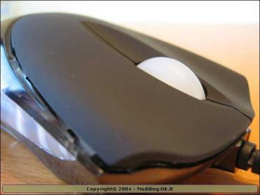 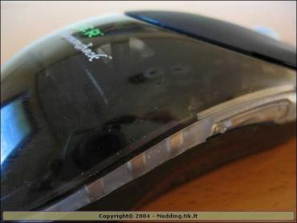 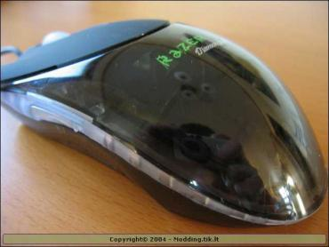 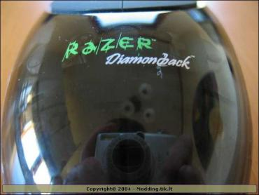 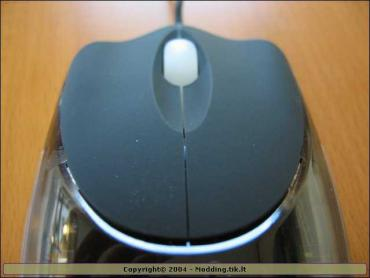 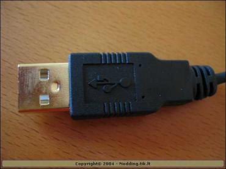 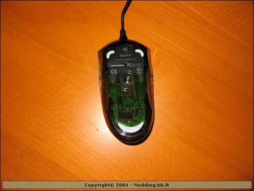 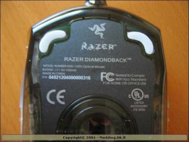
Specifikacijos
- Raiška - 1600dpi
- Optika pagaminta Kärna Precision
- 5,8 megapikselių (6500fps)
- 16-bit laidinis signalo perdavimas
- Greitis - iki 1m/s
- Didelio greičio judesio detekcija (susekimas) - iki 15 G
- Nėra poilsio (sleep) funkcijos - diodas neprigesta
- 7 programuojami mygtukai (įskaitant scroll-ratuką)
- On-the-fly jautrumo reguliavimas
- Dideli neslidūs mygtukai
- Labai lengvas (90g)
- Naujoviškas dizainas
- Begarsiai, nekeliantys trinties tefloniniai lipdukai
- Ilgas USB laidas (210cm)
- Gold-plated (auksu dengtas) USB kištukas
- Specialus pelės dėklas * Garantija - 24 mėnesiai
Bling - Bling
Manau, beveik neįmanoma, kad tokią high-end'inė pelė atrodytų negražiai arba "nuobodžiai". Razer firma pasirūpinuo šituo ir sukūrė permatomą pelės korpusą, pro kurį labai gražiai persišviečia sensoriaus diodas, sukurdamas nepakartojamą šviesos efektą, kuris pritrauks daugelių žmonių akis. Taip pat šioje pelėje yra įmontuotas skaidrus (guminis) scroll-ratukas, kuris taip pat yra apšviečiamas atskiru raudonu diodu, įtaisytu pelės viduje. Na ką gi, vis daugiau ir daugiau firmų pradeda gaminti "pribumbasus", kuriuos kažkada galėdavai pamatyti tik geriausių moderių custom'uose.
Norėčiau priminti, kad Razer Diamondback pelės būna dviejų tipų - Chameleon (besikeičiančios spalvos žiūrint skirtingais rakursais) bei Magma (būtent tokią aš ir apžvelgiu).
Ką gi - nuotraukos, nuotraukos, nuotraukos :
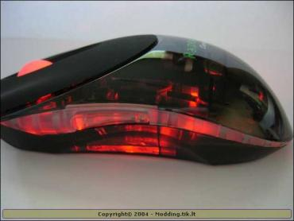 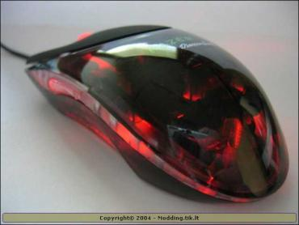 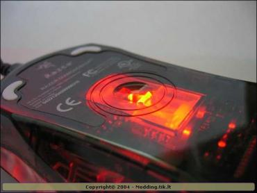 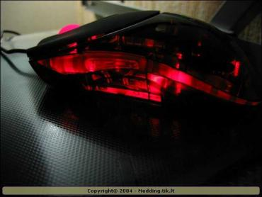 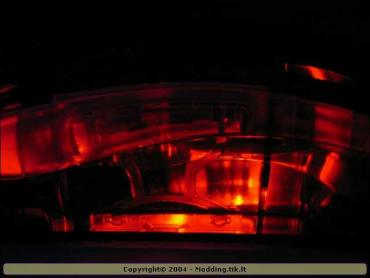 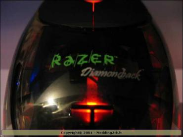 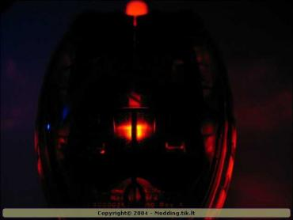 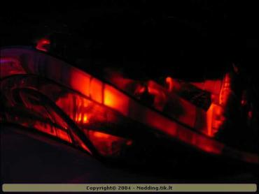
Soft'as
Su šia pele, kaip jau turbūt pastebėjote nuotraukose, buvo pridėtas kompaktinis diskas su driver'iais bei soft'u, kuris turi būti būtinai įdiegtas norint naudotis visomis funkcijomis. Taip, pelė veiks ir be šio soft'o, tačia jūs neturėsite galimybės pasinaudoti visais smagumynais-margumynais. Beje, kaip pranešė gamintojas, ateityje vietoj kompaktinio disko, pakuotėje bus įdėta instrukcija kaip ir iš kur atsisiųsti naujausią tvarkyklės versiją bei ją įdiegti. Taip norima užtikrinti, kad visi šių pelių vartotojai naudosis paskutinėmis tvarkyklių versijomis ir neiškils jokių nepatogumų/nesuderinamumų.
Pagrindiniame lange jūs matote 3 pagrindines skiltis - Sensitivity, Scroll Wheel bei Buttons. Dabar aš trumpai paaiškinsiu, ką kiekvienoje skiltyje galima nustatinėti:
Sensitivity - šioje skiltyje jūs galite reguliuoti pelės jautrumą, įjungti ar išjungti on-the-fly jautrumo keitimą, nustatyti sau patogų dvigubo spragtelėjimo greitį bei čia pat jį išbandyti "sudaužant" stiklą testavimo laukelyje.
Scroll Wheel - čia galima reguliuoti scroll-ratuko greitį bei įjungti arba išjungti funkciją "universal scrolling". Taip pat, kaip ir praeitoje skiltyje, galima išbandyti scroll-ratuko nustatymus testavimo zonoje (judinant gyvatę).
Buttons - čia galite nustatyti pagrindinių mygtukų išsidėstymą priklausomai nuo to, ar jūs esate kairiarankis ar dešiniarankis. Taip pat čia galima priskirti funkcijas visiems septyniems pelės mygtukas pagal savo norus - ši funkcija man labiausiai patiko. Užprogramuoti galima netgi macros'us iš kelių klaviatūros kamandų.
Taip pat visuose trijuose skiltyse yra funkcija "update", kuri padės lengvai surasti naujausią tvarkyklės versiją bei ją atnaujinti.
Naudojimasis
Šio skiltyje aš nusprendžiau pats nerašyti ar buvo patogu/nepatogu naudotis šia pele. Aš nusprendžiau, kad ši infromacija bus daug objektyvesnė, jei pele pabandys naudotis žmogus, kuris nenusprendžia pelės kokybės vien pažiūrėjęs į jos markę, išvaizdą ar specifikacijas - jam svarbiausia patogumas. Triumpiau tariant, tiesiog norėjau nešališkos nuomonės. Taigi pažystu tik vieną tokį žmogų - mano pastovus žaidimų partneris - tėtė ;). Taigi suteikiu jam žodį:
Paprasto vartotojo-geimerio nuomonė: pelė gali daugiau, negu reikia kasdieniniame gyvenime. Akceleracijos funkcija žaidimo metu - nepraktiška, nes kursoriaus judesys proporcingas ne pelės judesiui, o judesio pagreičiui. Šoninių mygtukų idėja puiki tik iš pirmo žvilgsnio - mygtukų valdymas sunkiai derinasi su plaštakos anatomija. Įsivaizduokite ką galima padaryti bevardžiu pirštu, kai rankoje laikote pelę. Tokios kokybės pelė reikia naudoti su specialių stikliniu "kilimėliu". Po valandėlės žaidimo ranka sušala (na čia labiau apie padą negu pelę ;)). Vasaros metu tai butu pranašumas. Daugiau trūkumų surasti nepavyko... Po pirmų minučių, paperka idealus pelės slidimas "kilimėlio" paviršiumi ir preciziškas centrinio (scroll) ratuko veikimas. Jokiu spragtelėjimų, jokiu trūkčiojimų. Kiekvieno kontakto suveikimas tiksliai jaučiamas (o ne tik girdimas). Žaidžiant su ausinėmis, tai didelis pranašumas. Mygtukų medžiaga ir forma ergonomiška, pirštai be įtampos guli ant pailgos formos mygtukų be įprastinio raumenų įtempimo. Netgi ilgas žaidimo "seansas" nesukelia plaštakos raumenų nuovargio. Manau tiek galėčiau pasakyti apie šią pelę.
Galėčiau tik pridurti, jog naudotis dešinėje esančiai mygtukais (prie didžiojo piršto) yra pakankamai patogu, ko nepasakysi apie kairėje išdėstytus mygtukus. Taip pat man labai patinka, jog ši pelė yra simetriška, t.y. ji tinka tiek dešiniarankiams, tiek kairiarankiams žmonėms.
Išvados
Kol kas neturėjau progos sulyginti šios pelės su kitų gamintojų high-end'inėm pelėm, taigi dorai pasakyti, ar tai geriausia ar "eilinė" high-end pelė negaliu. Manau tiesiog suma-sumarum visus pliusus ir minusus:
Pliusai:
- Naujoviškas, akį traukiantis dizainas
- Be galo preciziška, tiksli pelė
- Nėra "miego" funkcijos (diodas neprigesta)
- Ergonomiška forma
- Dydeli neslidūs (padengti specialia gumine medžiaga) mygtukai
- 7 programuojami mygtukai
- Ilgas laidas
- Pelės dėklas
Minusai:
- Kaina? (€ 49,99)
- Nevisai patogus šoninių mygtukų išdėstymas
Ką gi, akivaizdu - pliusų yra žymiai daugiau nei minusų, todėl šiai pelei suteikiu 9 iš 10 balų. Razer firma sukūrė tikrai dėmesio vertą produktą, kuris savo galimybėmis lenkia bet kurią šiuo metu gaminamą pelę.
Už suteiktą galimybę apžvelgti šia pelę www.modding.lt komanda dėkoja parduotuvei SPEED-LINK, bei aišku pačiam Razer. Daugiau pasiskaityti tinklapyje www.razerzone.com.


{kind=link}
{kind=link}
{kind=link}
{kind=link}
{kind=link}
{kind=link}
{kind=link}
{kind=link}
{kind=link}
{kind=link}
{kind=link}
{kind=link}
{kind=link}
{kind=link}
{kind=link}
{kind=link}
{kind=link}
{kind=link}
{kind=link}
{kind=link}
{kind=link}
{kind=link}
{kind=link}
{kind=link}
{kind=link}
{kind=link}
{kind=link}
{kind=link}